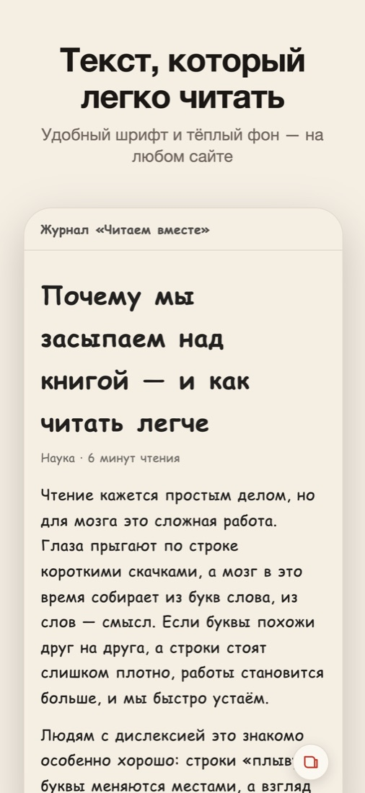
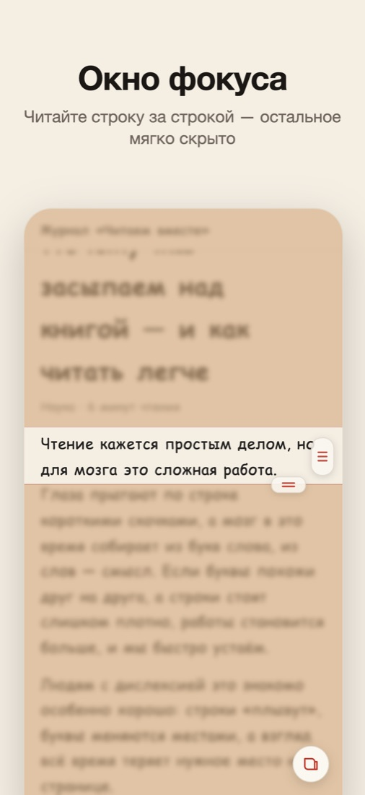
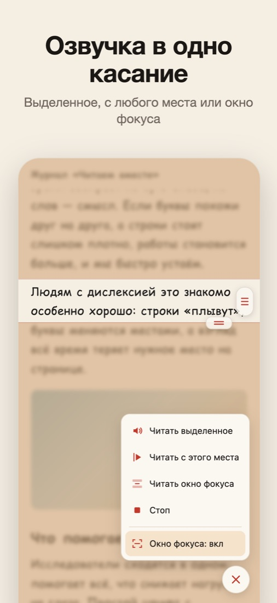
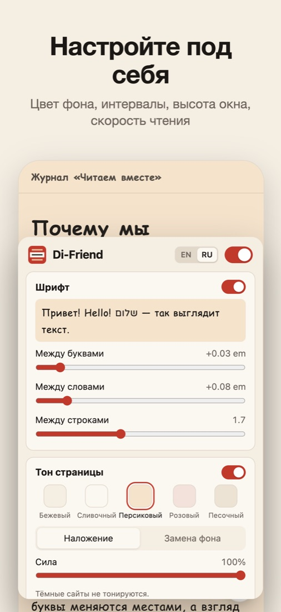

Di-Friend — расширение Safari для людей с дислексией и всех, кому трудно читать с экрана. Удобный шрифт, тёплый фон, окно фокуса и озвучка — на любом сайте.
Скоро в App Store7 дней бесплатно, затем $0.99 в месяц или $9.99 в год · iPhone, iPad и Mac · без рекламы и сбора данных




Comic Sans или похожий на него Comic Relief — буквы с непохожими формами легче различать. Для иврита — округлый Varela Round. Можно добавить воздуха между буквами, словами и строками.
Вместо слепящего белого — бежевый, сливочный, персиковый, розовый или песочный. Тёмные сайты Di-Friend не трогает.
Светлая полоса на одну или несколько строк, остальное мягко затемнено и размыто. Текст прокручивается под полосой, её можно сдвинуть и растянуть пальцем.
Прочитает выделенный текст, страницу с любого места или то, что в окне фокуса. Русский, английский и иврит — голосами вашего устройства. Скорость настраивается.
Подробнее и ответы на частые вопросы — на странице поддержки.